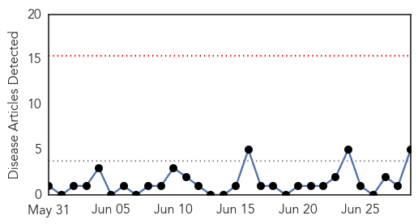
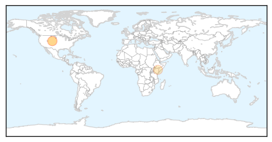

30 Day Trends
Web: 0 alerts, 0 warnings
Twitter: 0 alerts, 0 warnings
Top Articles:
- 0.790
- Five Hills investigating Hepatitis A case
- 0.773
- Colorado restaurant may have exposed many to Hep A
- 0.763
- Free Hepatitis A shots for anyone who ate at Tortilla Marissa’s Rocky Mountain Collegian
- 0.730
- Hepatitis B cases on the rise in Kenya - Kenya
- 0.654
- Griffin Hospital in Derby rebounding from misuse of insulin pens
Top Tweets:
-
No tweets found for Jun 29, 2014
Web/News Articles
Tweets

Article Locations
Article Confidences